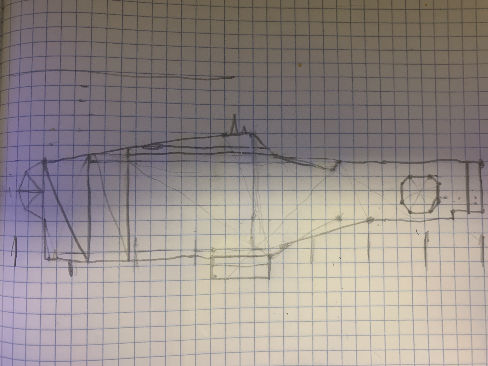

Auto-Segment sets the slider for segment count automatically so that when you are drawing in circles mode, the minimum number of segments necessary to not degrade the roundness of the circle is drawn. This saves drawing time for smaller circles, while automatically increasing the number of segments for large circles so that they still look perfectly circular.
Rainbow Mode moves the sliders smoothly through all the colors while shapes are being drawn to create a rainbow effect instead of using the manually set color.
Reference Image and Sketch
